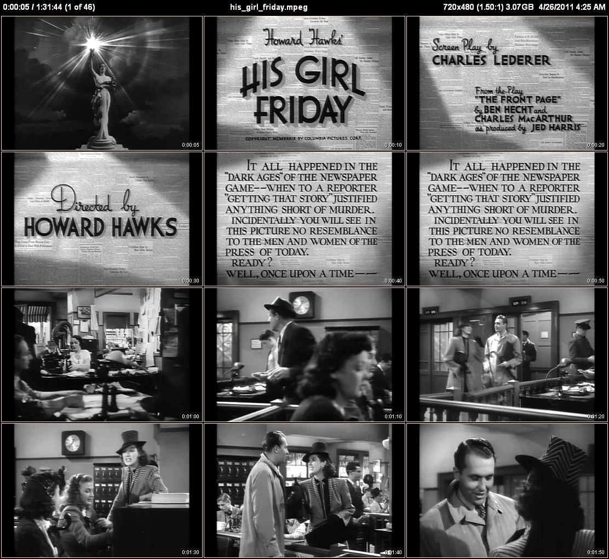

The --aar Auto Aspect Ratio adjustment option can automatically remove the blacks bars from video thumbnails. Some video files (usually MPEG2 Encoded Videos) have their “Display aspect ratio” property set to something different than the aspect ratio of their video frames. The --aar option works by automatically calling the -p, --crop option for you with the video’s display aspect ratio.
You can see this, for example, in the MediaInfo report for the MPEG2 version of His Girl Friday:
Width : 720 pixels
Height : 480 pixels
Display aspect ratio : 4:3
where the video frame aspect ratio is 1.5 (720 / 480) and the Display aspect ratio is 1.33 (4 / 3). Compare this to the report for the MPEG4 version:
Width : 320 pixels
Height : 240 pixels
Display aspect ratio : 4:3
where the video frame aspect ratio is 1.33 (320 / 240) is the same as the Display aspect ratio.
To see the --aar option in action look at the following thumbnails that were generated with aar Off and On:
|  | |
| aar Off | aar On |
With aar Off you can see that the MPEG2 version of “His Girl Friday” is indeed pillarboxed, as we expect from its MediaInfo report. You don’t normally notice this since most media players honor the display aspect ratio property and will automatically crop the video during playback. CLAutoThumbnailer emulates this same behavior by normally running with aar enabled.
If you look at the full-size images by clicking on the above thumbnails, you’ll see that the “aar Off” version says in the upper-right corner 720x480 (1.50:1), which is the video frame size and its aspect ratio.
The “aar On” version has 640x480 (1.33:1) [720x480 (1.50:1)]. When you have two values for the frame size and aspect ratio, one inside square brackets, it means the thumbnail frames are taken from something other than the full original video frames. The dimensions inside the square brackets are the original dimensions, while the other numbers are the actual frame and aspect ratio used to create the thumbnails. Notice that the black bars have been removed.
Letterboxing or pillarboxing usually occurs when the display aspect ratio isn’t set or is set incorrectly. Luckily, as Remove the black bars from the edges of thumbnails shows, it’s a (mostly) simple matter to fix this problem by using the -p, --crop option explicitly.
{kind=link}
{kind=link}